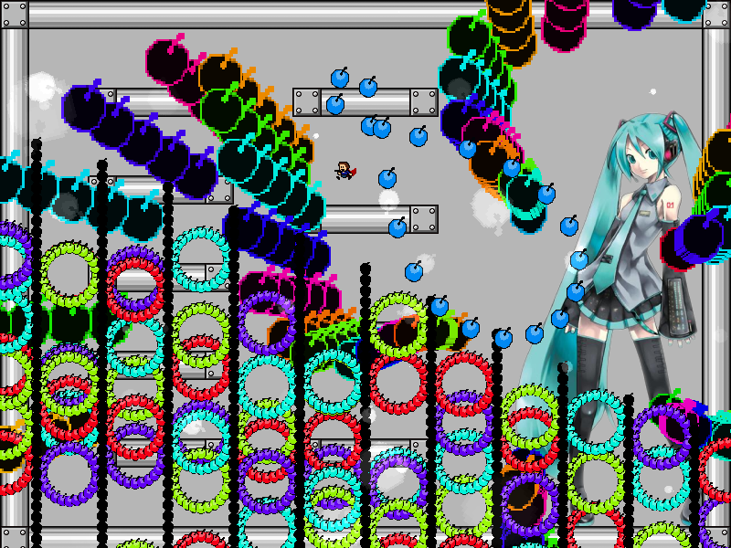
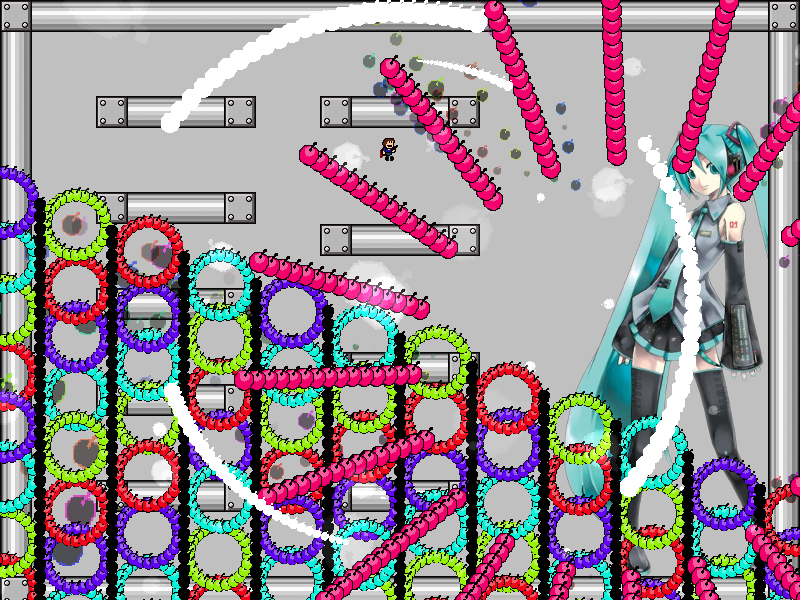
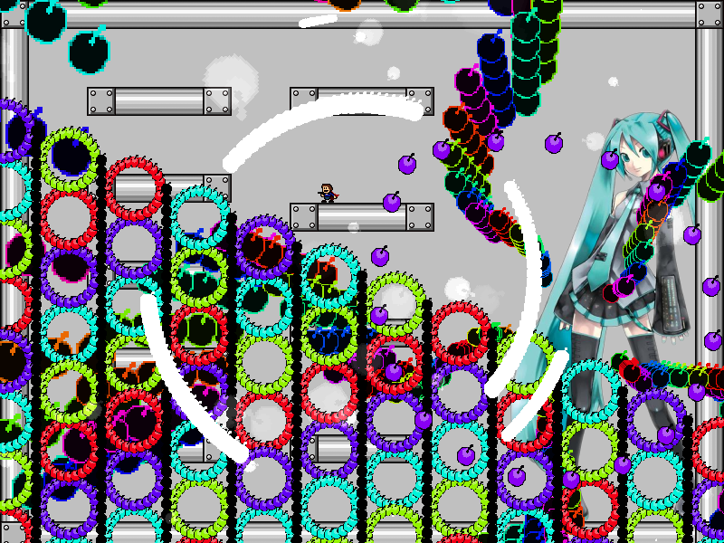

chapter4 - section5

| creator | segment | label | jump |
|---|---|---|---|
| NN | 0:48.10~0:49.50 | P/Q | double |
角度のみがランダムな弾幕です。
初音ミク右手部を中心として生成される虹色の円形弾幕に関して、0:48.50~0:49.30で自機狙い弾幕として形状が歪んでいる（fig.4-5.1.a）間に、0:49.30における発射角度（fig.4-5.1.b）を判断することを目的としています。


また、0:48.80以降画面中央を中心として生成される白色の円弧状弾幕（fig.4-5.2）については、初期角度および半径が0:48.50におけるプレイヤーの位置を基準として決定されます。
0:49.30において発射される放射状弾幕(fig.4-5.1.b)を回避するのに十分な空間を確保するために、これらの誘導を工夫する必要があります。
